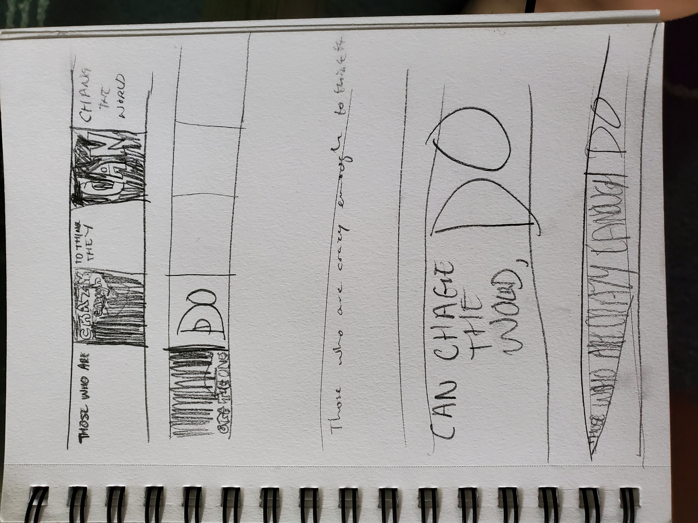

Accordion Graphic Design Project
During the summer of 2020 I was enrolled in a text course where we learned about the fundamentals of design, typography and layout through online lectures, projects and critiques. One of these projects was an accordion utilizing Adobe Illustrator where we were supposed to display a song lyric. But, I decided to do this quote instead. Some design constraints for this project included only using one color. I chose to use the color red and varry the tint. Also, we had a set number of folds for our individual accordions.
